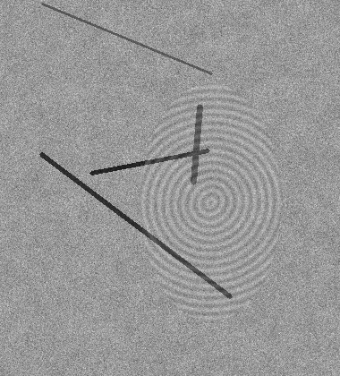
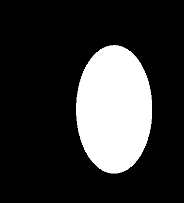
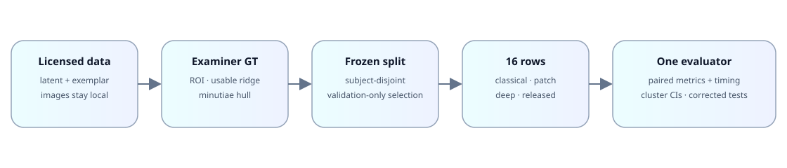
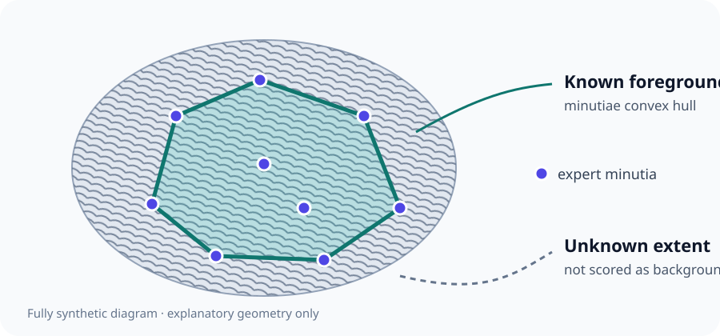

SD302-Latent
10,092 annotated impressions from 200 subjects. Examiner ROI polygons define Table A; 10,024 complete ridge-quality maps define Table A-prime.
Fingerprint segmentation · reproducible evaluation
A validation-selected comparison of classical, patch, encoder–decoder, transformer, and released segmentation methods on examiner-annotated latent fingerprints.
Results pending: public metrics remain blank until the preregistered seed-zero completion gate.
Fingerprint foreground segmentation affects every downstream operation that depends on ridge-bearing area. We compare the twelve segmentation entries catalogued in a recent review under one subject-disjoint split, one physical resolution, and one metric implementation. Examiner ROI polygons define the primary latent endpoint, while usable-ridge maps provide a second ground-truth definition. Expert-minutiae hulls support a lower-bound exemplar analysis without being misrepresented as full foreground masks. Learning rates, stopping epochs, thresholds, and post-processing are selected using validation subjects only; each frozen model is scored once on the test subjects. Uncertainty uses subject-cluster bootstrap intervals and paired tests with Holm correction. The public release contains aggregate tables, reproducible code, and receipt-bound synthetic illustrations only. Licensed biometric samples, per-image records, trained weights, and private infrastructure details are excluded.
Background texture can create false ridge evidence; overly tight masks can remove usable minutiae. The benchmark measures both missed foreground and false background detection while preserving the distinction between an examiner ROI and a usable-ridge map.


All methods share the same study units, split, physical resolution, validation boundary, and evaluator.

The public repository ships no source fingerprint. Counts and definitions below describe the authorised local evaluation protocol.
10,092 annotated impressions from 200 subjects. Examiner ROI polygons define Table A; 10,024 complete ridge-quality maps define Table A-prime.
Expert minutiae form a lower-bound convex hull. B1 reports MC, HR, PAR, and OHF—never Dice against the hull.
68 incomplete quality annotations affect A-prime only; two NONPRINT annotations are excluded from test scoring.

Exactly one card represents each Fig. 2 entry. Multi-row entries expand only in the result tables. The dagger marks the declared two-dimensional substitute.
Source: Chhabra et al. (2023)
Here: Stacked convolutional autoencoder, then a centred patch classifier.
Train-subject patches only; shared 16×16 output blocks.
Source: Cappelli (2023)
Here: Released GMFS algorithm and SUFS weights; separate tuned and fine-tuned rows.
No architecture substitution.
Source: Jaafar et al. (2022); Ronneberger et al. (2015)
Here: Four levels, base width 32, BatchNorm/ReLU and bilinear upsampling.
Faithful architecture reimplementation.
Source: Liu et al. (2022); Xie et al. (2021)
Here: SegFormer-B2 with ImageNet initialisation and a one-channel adapter.
† Declared 2-D substitute for the reviewed volumetric OCT model.
Source: Joshi et al.
Here: R2U-Net-style recurrent blocks with two steps and dropout 0.2.
Deterministic table inference; MC dropout is an auxiliary analysis.
Source: Joshi et al. (2021)
Here: Recurrent backbone with bottleneck gradient-reversal alignment.
Table A disables alignment; RA-RUnet is restricted to the cross-domain setting.
Source: Liu & Qian (2020); Zhou et al. (2018)
Here: Native UNet++ with nested dense skips and four supervision heads.
Final head only at inference.
Source: Cortes & Vapnik (1995); Bazen & Gerez (2001)
Here: Nyström RBF approximation over one shared eight-feature block descriptor.
Kernel approximation is disclosed for tractability.
Source: Serafim et al. (2019)
Here: Centred 64×64 and 32×32 patches predict a 16×16 output block.
AlexNet uses an output-equivalent deterministic fixed pool.
Source: Tang et al. (2017)
Here: Official FingerNet weights and segmentation head, evaluated zero-shot.
No replacement when the legacy runtime is unavailable.
Source: Sankaran et al. (2017)
Here: Balanced random forest over the shared block descriptor.
Common validation grid and post-processing.
Source: Ezeobiejesi & Bhanu (2016)
Here: Single-hidden-layer ELM with inverse-class-frequency W1 weights.
Common block descriptor and post-processing.
Every value, interval, and significance row below is generated from the same tracked aggregate CSV/JSON payload used by the paper tables. Empty cells are deliberately rendered as pending.
| Approach | Family | Status | Metric and 95% CI | Seeds | Params M | ms/img | Device |
|---|
| Metric | Comparison | Estimate | 95% CI | Holm p | Significant | Status |
|---|
Choose a generated print and a receipt-bound output. Ground truth is always available; each completed output comes from the named repository implementation after synthetic-train-only fitting where required. These micro-runs demonstrate executable code paths, not relative accuracy or biometric performance.
These deterministic CPU micro-runs exercise repository code on generated patterns only. They are not benchmark evidence. Unavailable external-weight methods are named explicitly and never receive fabricated masks.
No script downloads biometric data. Supply locally authorised paths and frozen receipts.
python -m pip install -r requirements.txt python scripts/smoke_synthetic.py --work-dir .smoke bash scripts/reproduce_table_A.sh --config local/benchmark.env python site/build.py python scripts/check_site_numbers.py python scripts/check_release_requirements.py python scripts/scan_release.py
Seeds, thresholds, immutable split assignment, and one-command table entry points are documented in PROTOCOL.md.
Reimplementations can differ from original code; SegFormer is a declared substitute; released zero-shot models have external training provenance; ROI and usable-ridge GT answer different questions; exemplar hulls are lower bounds; and one coordinated data source cannot establish every deployment domain.
@software{narayan2026latentseg,
author = {Narayan, Udit and {TODO: co-authors}},
title = {Latent Fingerprint Segmentation Benchmark},
year = {2026},
url = {https://github.com/Udiation/latent-fingerprint-segmentation-benchmark}
}NIST SD302; pyfing; the FingerNet authors; and the Hugging Face SegFormer implementation.